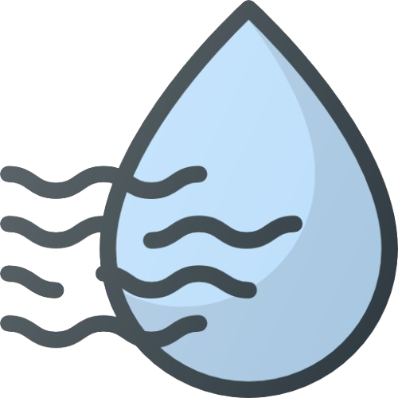

Weather Me
Invalid city name
22°C
New York

50%
Humidity
15 km/h
Wind Speed
5-Day Forecast
Recent Articles
The Impact of Climate Change on Weather Patterns
Understanding Weather Forecasting Techniques
How to Prepare for Extreme Weather Events
Top 10 Weather Apps You Should Use